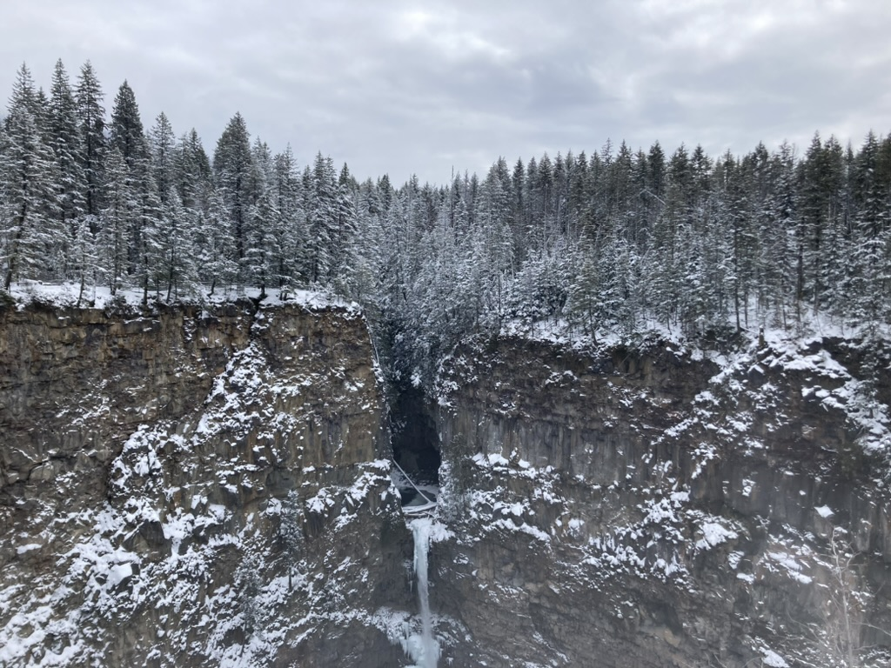
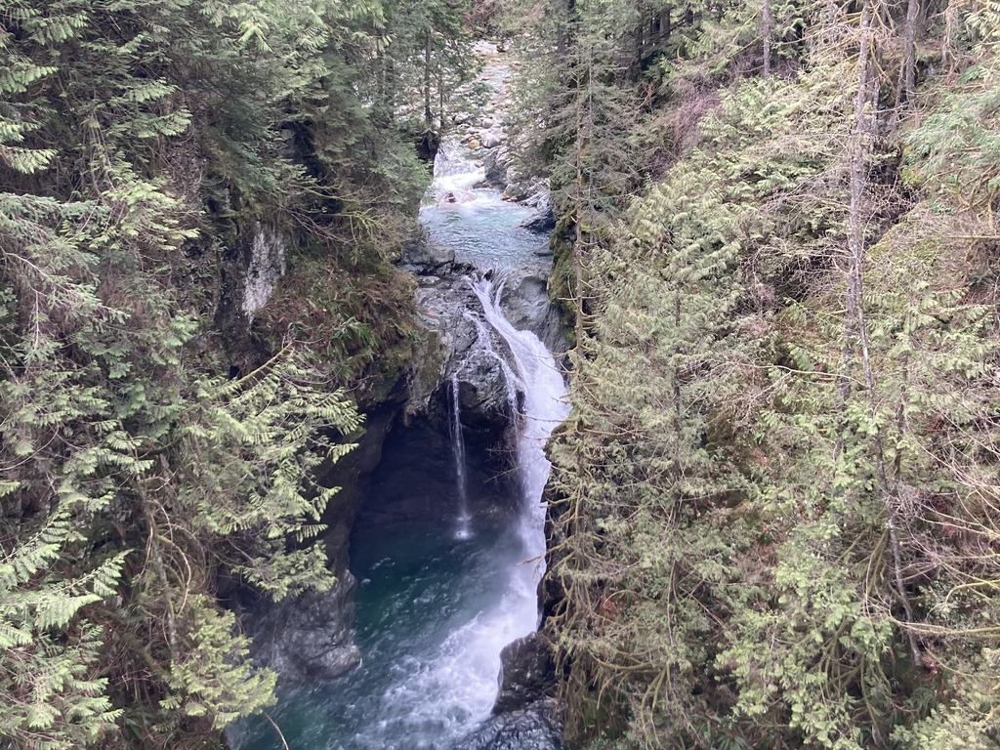
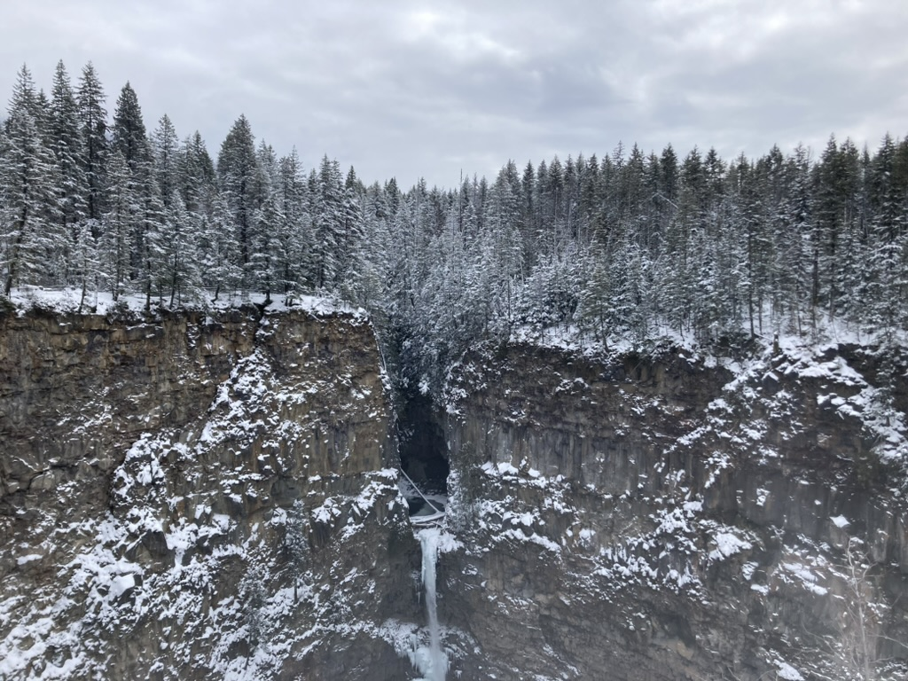
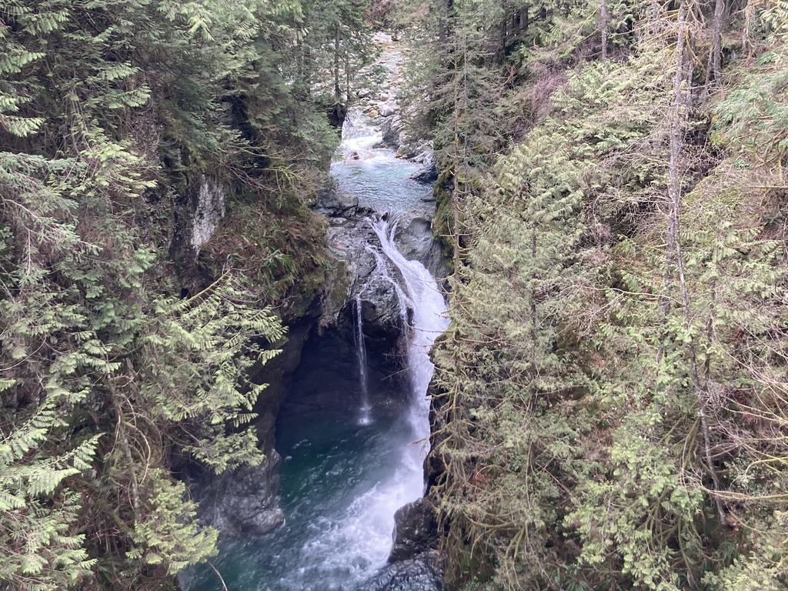

Canada Holiday 2024
In february of 2024 I flew to British Columbia, Canada for a two and a half week holiday. I spent most of my time snowboarding in Sun Peaks which is about a four and a half hour drive from Vancouver. While staying in Sun Peaks I took a day off snowboardng, rented a car and drove to Wells Gray Provincial Park to see the beautiful waterfalls there. After Sun Peaks I spent three days in Vancouver sightseeing and hiking. Listed below are some of the waterfalls I saw in BC in the order they appear in the gallery below.
Wells Gray
- Dawson Falls
- Helmcken Falls
- Spahats Creek Falls
Vancouver
- Lynn Canyon

 


